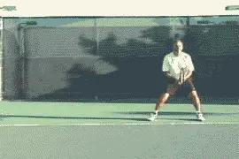
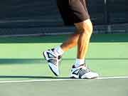
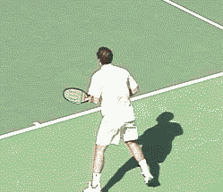
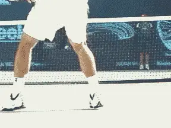
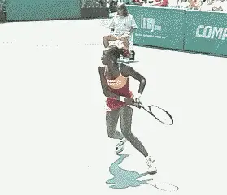
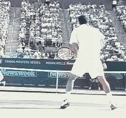
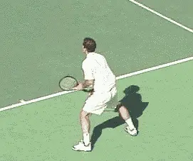
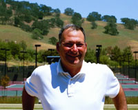

First Two Steps: The Key to Quickness¶
Michael Friedman¶

Learn how to cover the whole court by learning the same footwork patterns as the pros.
Improvisation is what makes tennis so much fun. Every ball you hit or react to is different from the one before. Your opponent tries to hit a ball you can't get to, and you try to do the same. The unpredictability of the outcome makes each point fun. If every ball is different, then it makes sense for you have to have a movement system that can put you in the proper relationship to hit the ball no matter where it is on the court.
On television, the pros make their side of the court look small because they get to almost every ball. On the other hand, when you get on the court, your side looks huge because you can't imagine being able to get to every ball yourself.
I believe you can get to almost any ball by starting quickly and efficiently like the pros. And I can show you how. Let's go over the core principles of movement, and then see the top pro players use these patterns in actual competitive play.
The First Two Steps are the Key!¶
Have you ever been walking down the sidewalk and, suddenly, see a can you can't wait to kick? As you approach the can you don't consciously change stride, but you naturally seem to get into position to kick it with your dominant foot, and then, let it rip! We all have the ability to see a distance and calculate the space and time with our feet to get to where we want to go. When playing tennis, this means getting to where the incoming ball is going, so that it is on our strike zone.
Basically, there are two types of balls any player needs to reach. If the ball is easy to get to, we call it the Inner Ball. If it's harder to get to, we call it the Outer Ball.
|  | the animation on the left.** |
| 1. **Pete's first step with his | |
| right foot is fairly small and | |
| across, parallel to the | |
| baseline.** | |
| 2. **His second step with his left | |
| foot is lined up with his strike | |
| zone** | |
| 3. **and he drives off his left or | |
| back foot into the third step for | |
| a great step/hit rhythm.** |
Mastering the Basic Movement Patterns¶
In tennis you must be able to move in any direction. Using an initial weight shift, and then a two-step movement pattern, you can move efficiently in any direction.
With the steps I'm going to show you, you can cover half the court. As our animations show, these are the same steps used by the best players in the world, like Pete Sampras and Venus Williams.
|   | |
| The first move or the weight shift on the forehand and on the backhand. Now you're ready for the first step. |
The First Move¶
The first, reflexive move to the ball is the weight shift. Starting in your ready position (See Part 1), execute the split step and then shift your weight in the direction you are going to move. If the ball is fairly close the shift is small, if the ball is further away the shift is larger.
The First Step¶
The first step is across your body, stepping with your right foot if you are moving to your left, or your left foot if you are moving to your right. The same would be true for movement in any direction - the step is across in the direction you are moving.
|    | |
| The first step is across the body, turning the torso sideways and dictating the stride length. |
[This first step across turns the whole body sideways to the net. The first step is either small, medium or large depending on where the ball is going.] [The size of first step dictates the stride length for the second step. You want your strides to be of equal length, which will give you good balance and timing.]
With the exception of the gravity step (see below), the first step must be in the direction you need to go. This sounds remedial, but I see a lot of players actually making the first step away from where they have to go. For example, when running up for a drop shot, some players actually step backwards before they move forward.
The Second Step¶
The second step is with your back foot, and this step positions you to the strike zone or contact point. This step judges the relationship of your body and racquet to the ball. If you are too close to the ball, your second step with the back foot got you too close. If you are too far away from the ball, your second step didn't get you close enough.



The second step positions you to the ball, with the back foot parallel to the baseline, keeping your knees and hips sideways.
[This second step also positions the back foot parallel to the baseline]. If the foot is parallel to the baseline, the knees and hips must also be sideways to the net. After the second step, you are in position to hit with either an open stance or a resistance stance. You are also in position to step into the ball and create a closed hitting stance. More on hitting stances in my next article.
As I said, these steps are enough to get to most balls in your matches. The distance to the ball determines the length of your stride so, with the same pattern, you can cover more or less court. If the ball is further away, then you can continue the pattern adding more steps. At times you will start with the Gravity Step when you have a lot of court to cover.
The Gravity Step¶
In addition to the basic Two Step pattern, there is one additional step you'll need, the \"Gravity Step.\" You make this step on balls that are furthest away. The gravity step is a drop step. The back foot pulls back slightly under the body, and this allow you to push off harder so your step across can go even further (Read Jim McLennan's articles on Gravity Motion part 1, part 2, and part 3). This a very important aspect of footwork employed by all great movers on the tennis court.

Pete's Gravity Step Backhand to an Outer Ball: As Pete lands from his split step his left foot drops under him as his weight is shifting to the left (see animation). The right foot steps across and covers a lot of ground. The second step gets all the way to the singles sideline pointing parallel to the baseline in a hurry. His third step is slightly after contact but keeps him in balance throughout the finish of the swing.
Let's see some more examples of how great movers like Pete Sampras and Venus Williams use these patterns in various combinations to reach all these balls.
Pete's Backhand: Moving Back to an Inner Ball

This ball has Pete moving back away from the baseline. The ball bounces fairly deep and he has to get his left foot back and away from the ball in order to drive off of it into the swing.
Venus's Backhand: Moving Forward On a Diagonal to an Inner Ball

Venus starts with her right foot with a big step forward and across at a diagonal towards the ball. Her second step sets up right behind her first. If she had to go further the second step would have taken a bigger stride past the first step. Her third step triggers the back leg drive and rotation into the shot. Classic kinetic chain!
Pete's Forehand: Moving Forward to an Inner Ball

After the split step, the left foot starts forward into the court. The second step gets Pete sideways and into position relative to the contact point, and drives into his swing.\ \ Pete's Forehand Moving Away to an Inner Ball

In this situation Pete does not have to go very far. He takes small lateral adjustment steps in order to get his right foot into position for his inside out forehand. Great follow through!
Pete's Forehand Moving Away for the Outer Ball

Pete is moving here to hit an inside out or down the line forehand. He uses four slide steps to his left starting and ending with the left foot in order to get his right foot into a perfect position, ready to drive into the swing.
Pete's Backhand Moving Straight Ahead for an Inner Ball

For Pete, this is an Inner Ball, but for you and me it might be considered an Outer Ball, Pete takes a Gravity step with his left foot to push forward and then takes five quick steps towards the net starting with his right foot. He gets his left foot sideways and into position on the fourth step to initiate the last step and swing.
Pete is moving here to hit an inside out or down the line forehand. He uses four slide or adjustment steps to his left starting and ending with the left foot, in order to get his right foot into a perfect position, ready to make his last step into the swing.

years. Currently he is the Tennis Director at the Millennium Sports Club in Rancho Solano, where he runs an active junior development as well as adult program. Michael has been a mainstay in the United States Professional Tennis Association's Northern California Division, and served as President from 2000 through 2001. He has been a featured speaker at many USTA and USPTA tennis workshops throughout Northern California , specializing in teaching footwork and fundamentals to players as well as coaches. Michael was named USPTA Norcal Pro of the Year in 2003